GitOps in InnerSource: A Roadmap for Enterprise Infrastructure Governance
What if infrastructure could be an InnerSource project too? Not a module here and a component there: the whole platform.
Oscar Lobaton Salas
SRE & FDE at Cobre
photo
Juan David Arguello Plata
InnerSource Program Lead, Credicorp
Thursday, November 12, 2026 · Online
innersourcecommons.org/events/isc-2026
#InnerSourceSummit
OSCARINTRODUCTION · 2 / 11
Oscar · The opportunityShare the work. Move the knowledge.
Familiar code. Familiar conventions. Easier movement between teams.
OSCARINTRODUCTION · 3 / 11
Oscar · The opportunityShared work creates familiar ground.
Less rediscovery when people collaborate across teams.
OSCARINTRODUCTION · 4 / 11
Oscar · The opportunityDifferent companies. Similar platform needs.
Autonomy is necessary. Repeating every common decision is costly.
OSCARINTRODUCTION · 5 / 11
Oscar · The opportunityShared pieces. Repeated assembly.
What if the reusable artifact were the whole foundation?
OSCARINTRODUCTION · 6 / 11
Oscar · The opportunityKeep the collaboration. Increase the scale.
A bigger artifact. The same publish → consume → contribute loop.
OSCARINTRODUCTION · 7 / 11
Oscar · Proposed modelAn InnerSource landing zone. One shared foundation.
Versioned together. Adopted at each company’s own pace.
OSCARINTRODUCTION · 8 / 11
Oscar · The opportunityShared foundation does not mean identical companies.
Common base, local choices and deliberate upgrades.
OSCARINTRODUCTION · 9 / 11
Oscar · The opportunityReuse the learning. Share the responsibility.
Potential benefits need a contribution model that works.
OSCARINTRODUCTION · 10 / 11
Oscar · Context engineering · proposed extensionShared foundation. Living context.
Shared knowledge + fresh evidence → a better-informed next action.
OSCARINTRODUCTION · 11 / 11
Oscar · The opportunityFrom a reviewed change to a running platform.
Juan David → the architecture behind the idea.
JUAN DAVIDTECHNICAL
Part 1 · The basicsPublish once, consume many, contribute back
InnerSource in one picture: the internal registry
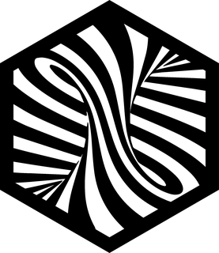
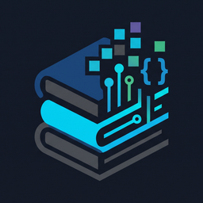
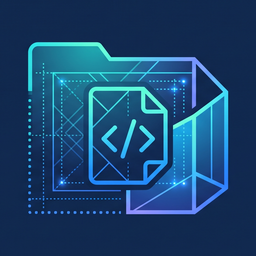
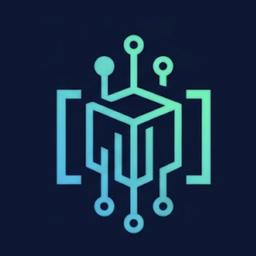
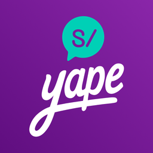
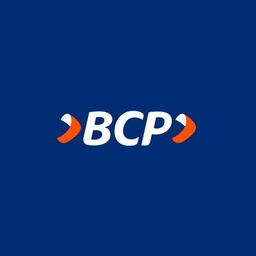
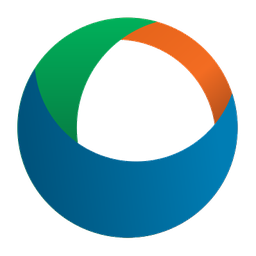
Contributor opens a pull request instead of a ticket
Trusted Committer reviews and merges the pull request
Consumer pulls the artifact, pinned to a version
An artifact is packaged or containerized once; whoever needs a change contributes it instead of waiting for it.
JUAN DAVIDTECHNICAL
Part 1 · The basicsThe pace keeps rising; the mistakes repeat
0
DevOps & DORA
Every team runs its own pipeline and its own infrastructure code
1
InnerSource
One shared platform: PRs, Trusted Committers, guardrails
2
GitOps & releases
Canary and blue-green releases; merged means deployed
3
Platform Engineering
A platform team offers golden paths and self-service
4
Agentic Platforms
Agents consume and change the platform through tools
In a holding: N companies × the same platform, rebuilt N times
same outagesame audit findingsame re-platforming
What if infrastructure could be a reusable framework too? Not single components: a whole suite, extensible and customizable to each company.
JUAN DAVIDTECHNICAL
Part 2 · Infrastructure as artifactsOpenTofu / Terraform: one module per layer
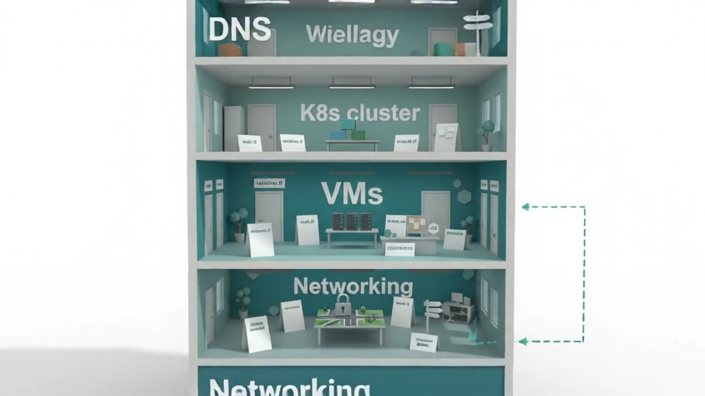
One layer per concern, each its own state: a DNS change never re-plans the network.
Each layer is a module with inputs, outputs and a version; modules live in a module registry.
Outputs are the IDs (VPC id, cluster name, role ARNs) that the company's repo will reference later.
A layer is an InnerSource artifact: published, versioned, pinned, contributed to.
JUAN DAVIDTECHNICAL
Part 2 · Infrastructure as artifactsHelm extends InnerSource into the cluster
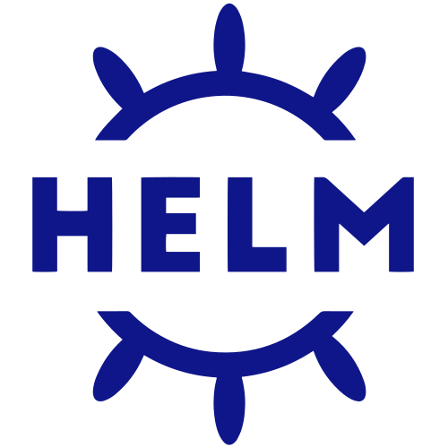
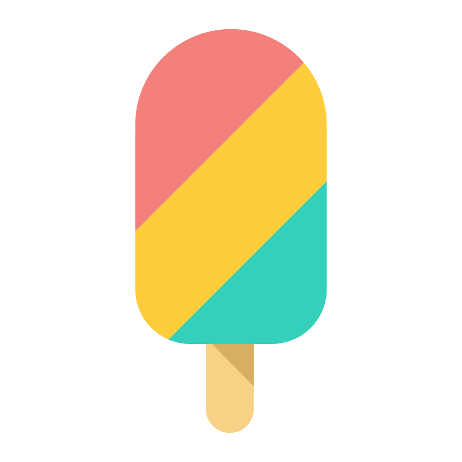
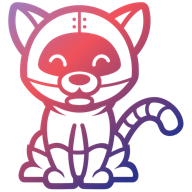
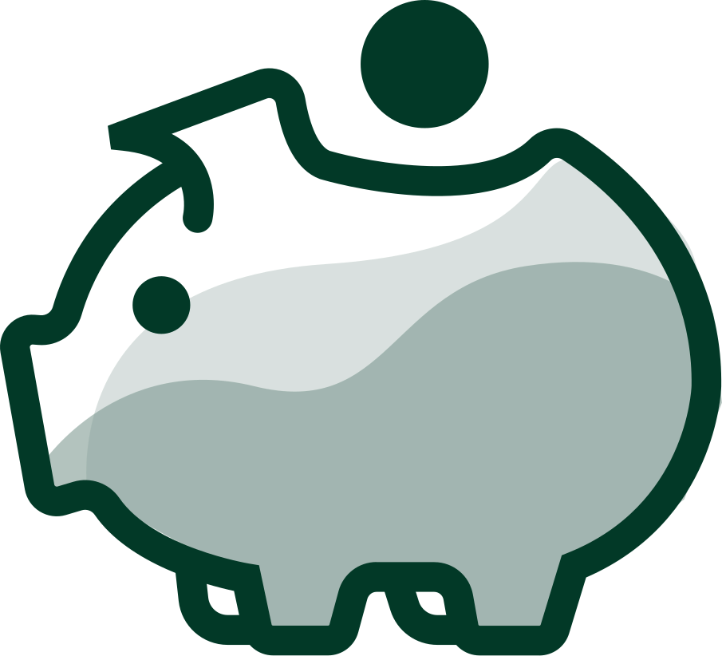
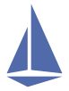
The core is what Kubernetes ships: API server, etcd, scheduler, controller manager, a kubelet on every node. It runs containers, not a platform.
Helm adds the rest, room by room: Crossplane, Tekton, OpenCost, OpenTelemetry & Prometheus, Istio; each a named project, each a chart.
Each chart is an InnerSource artifact: published to the registry, consumed by every cluster at a pinned version, contributed back with a pull request.
Helm carries InnerSource into the cluster: every chart is published, versioned, pinned, contributed to.
JUAN DAVIDTECHNICAL
Part 2 · Infrastructure as artifactsParts are shared; the whole is not
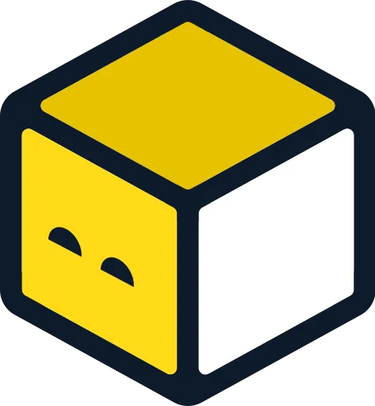
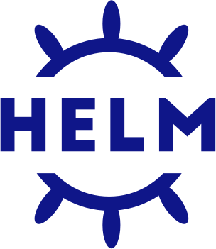
Share the whole, versioned: a product any team can order, a strategy any company can adopt at its own pace, provisioned centrally. That layer is what GitOps adds.
JUAN DAVIDTECHNICAL
Part 3 · GitOpsGitOps is the heart of the platform
from artifacts to a whole platform
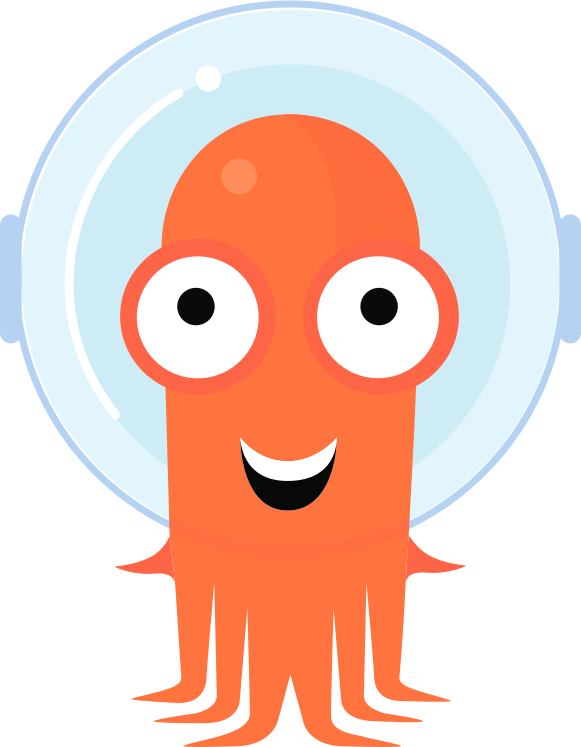
Backstage· Create · Managed database
Provision a managed database
1Fill in parameters2Review3Create
edit any field, then create · it opens a pull request
~/platform $platform namespace create checkout✔ request validated · namespace checkout✔ owner team-payments · from your identity✔ wrote ns/checkout.yaml · branch cli/checkout✔ opened pull request #1286Add namespace checkout awaiting approval · merged = deployed nothing was pushed to the cluster~/platform $
db/checkout.yaml — platform
12345678910111213141516
# a Crossplane claim · the same fields as the formapiVersion: platform.example.org/v1alpha1kind: Databasemetadata:name: checkout-dbnamespace: checkoutlabels:owner: team-paymentsspec:parameters:engine: postgresqlversion: "16"size: smallenvironment: productionwriteConnectionSecretToRef:name: checkout-db-conn
╭──────────────────────────────────────────────────╮│✻Welcome to Claude Code! cwd: ~/platform │╰──────────────────────────────────────────────────╯>Add a small PostgreSQL 16 database for the checkout service, owner team-payments, production. Open a PR.⏺ I'll draft the Database claim, wire it into checkout and open a PR for the team to review.⏺Write(db/checkout.yaml) ⎿ kind: Database · checkout-db · postgresql 16⏺Update(apps/checkout.yaml) ⎿ DATABASE_URL from secret checkout-db-conn⏺Bash(gh pr create --title "Add checkout database") ⎿ PR #1287 opened · awaiting human approval>
“Merged” means “deployed”.
JUAN DAVIDTECHNICAL
Part 3 · GitOpsGitOps enforces compliance in your company
GitOps brings governance to the table: versioned, enforced everywhere, auditable.
JUAN DAVIDTECHNICAL
Part 3 · GitOpsGitOps enforces compliance in your company
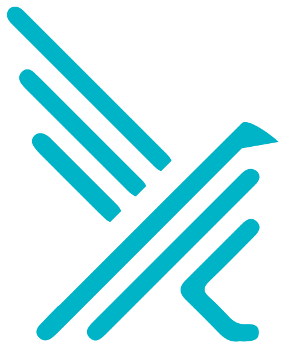
The team wrote the app. Observability and security came with the floor: versioned, from the compliance repo.
JUAN DAVIDTECHNICAL
Part 3 · GitOpsAn agentic marketplace, with GitOps behind it
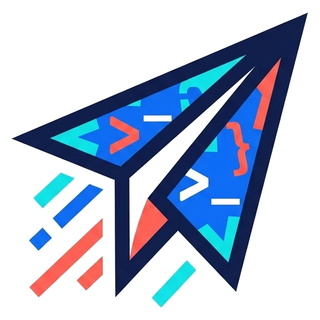
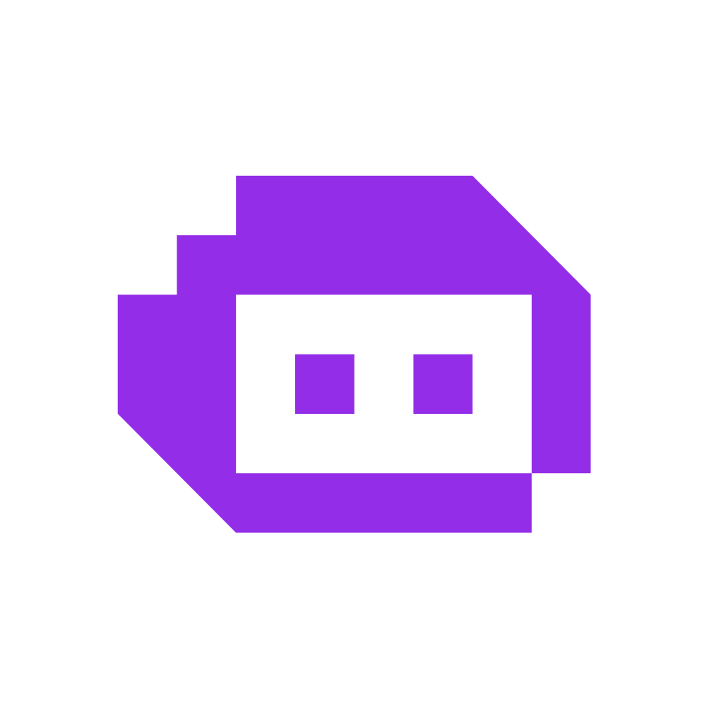
Built with InnerSource, used by the platform, governed by GitOps.
JUAN DAVIDTECHNICAL
Part 3 · GitOpsThe platform is governed; now make it yours
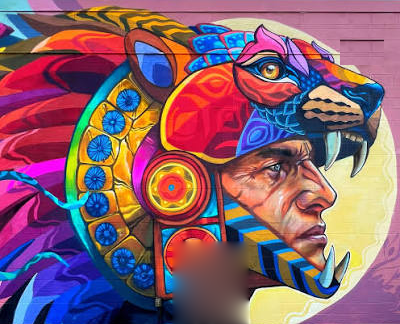
becomes
From a product you take to a framework you shape.
JUAN DAVIDTECHNICAL
Part 4 · The platform as a frameworkShare the platform, keep your differences